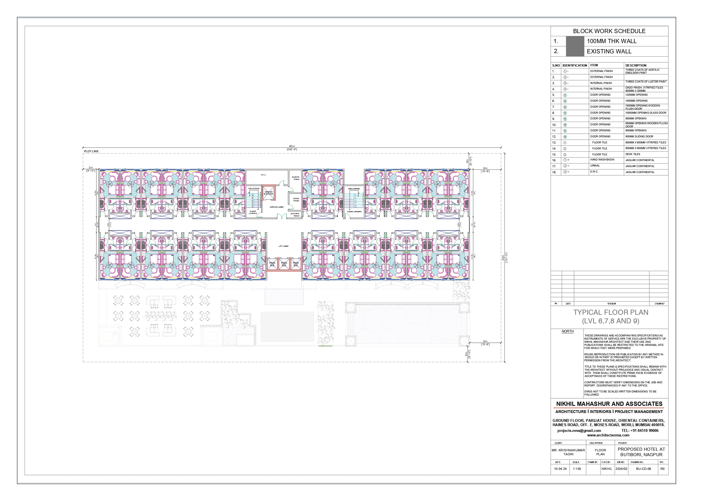
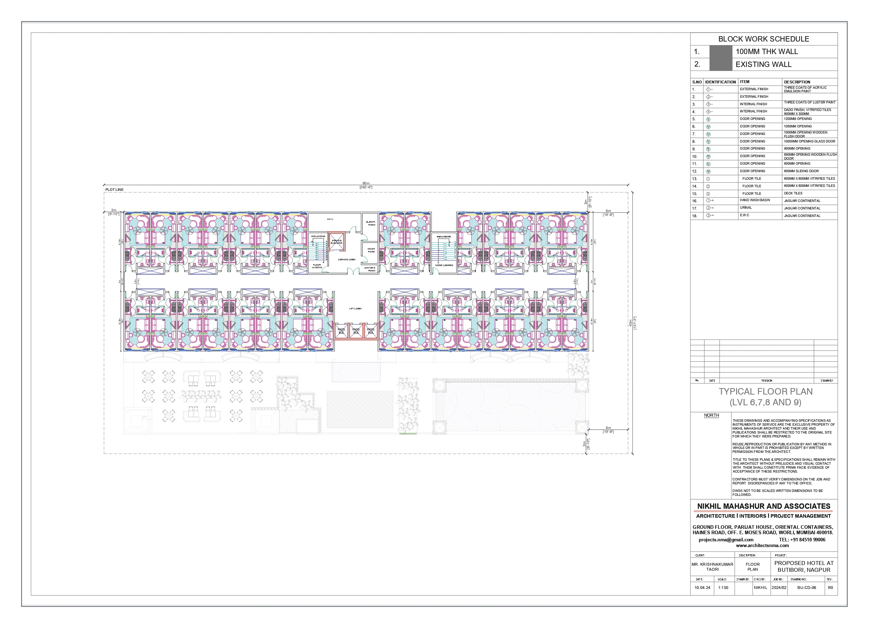

Internship at NMA
Overview
Nikhil Mahashur, an esteemed alumnus of IES college, has extensive experience in the architectural industry, having been active in the field since early 2000s. Under his leadership, NMA has grown to become one of the notable architectural firms in South Mumbai. The firm's portfolio includes a diverse range of projects, from residential and commercial buildings to restoration projects and construction project management. Their services encompass all aspects of architecture, including designing, detailing, and managing entire sites. This holistic approach ensures that each project is handled with a high level of detail and professionalism.
Office Environment and Team
Nikhil Mahashur, the principal architect and founder of the firm, was highly involved in mentoring the 4 interns working in his firm including me. His knowledge and experience in the field provided a practical understanding of the profession. The team at NMA also included a Junior Architect supervising us on day to day tasks and Senior Architects providing insights from time to time. The small but dynamic team allowed for close interaction and hands-on learning opportunities.
Tasks and Responsibilities
During my internship, I had the opportunity to work on various projects and responsibilities that exposed me to the world of parametric architecture. Some of the key tasks and responsibilities I undertook include:
- Drafting and Design Development: Creating detailed architectural drawings and assisting in design development.
- Model Making: Building 3D digital models for client presentations.
- Rendering: Photoshop renderings of plans, elevations and sections of working drawings.
- Site Visits: Participating in site visits to understand the practical aspects of construction and project management.
- Site Documentation: Measuring on site and then drafting accurately
- Research and Analysis: Conducting research for Building bye-laws and requirements to assist in the design process. I personally worked on studying Nagpur MIDC bye-laws for our project at Butibori, Nagpur.
- Market Survey: Visiting and comparing shops along with negotiating prices for acquiring matetials for different stages of project. I personally worked on searching for carpets and bed runners for an interior project.
Proposal at Butibori

 

During my internship, I had the opportunity to work on various projects and responsibilities that exposed me to the world of parametric architecture. Some of the key tasks and responsibilities I undertook include: